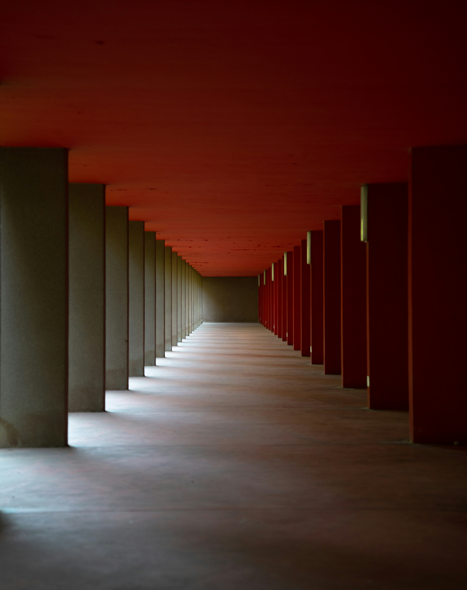
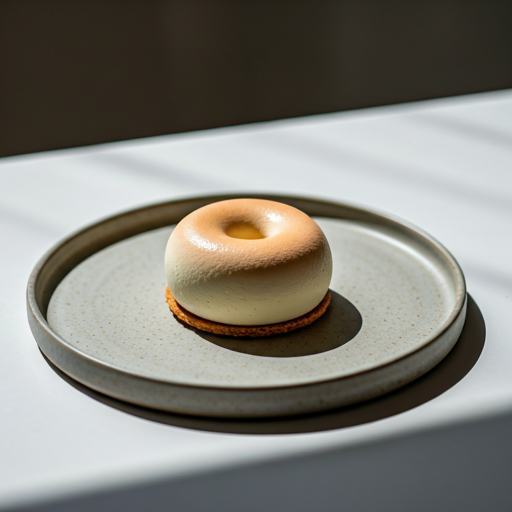
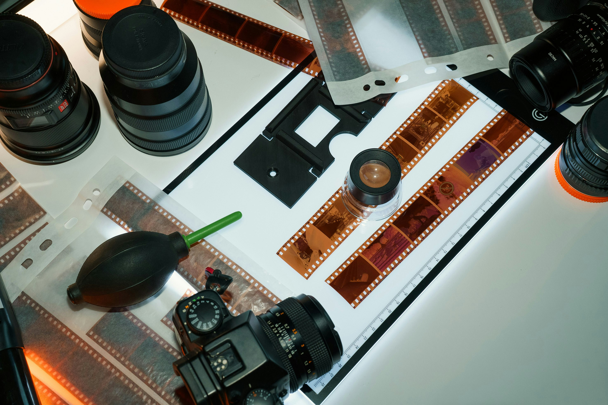

WE CREATE A CINEMATIC NARRATIVE FOR YOUR SPECIAL MEMORIES.
Preserving the intangible essence of time through the lens of sophisticated visual storytelling and editorial precision.

"Beyond simple records, don't you want to feel the emotions and atmosphere of that day again?"
NARRATIVE
Exploring the human experience02. Fluidity of Time
03. Silent Dialogues
Story of Emotion
A delicate approach to the moments that matter most.
We believe that true luxury lies in the details that often go unnoticed. Our philosophy is rooted in the pursuit of the 'cinematic soul'—the intangible atmosphere that turns a mere visual into a lasting memory.

Process
STEP 01
Discovery
The final narrative is woven together into a timeless piece of cinematic art, delivered in a format that transcends temporary trends.

STEP 02
Curation
The final narrative is woven together into a timeless piece of cinematic art, delivered in a format that transcends temporary trends.
STEP 03
Creation
The final narrative is woven together into a timeless piece of cinematic art, delivered in a format that transcends temporary trends.